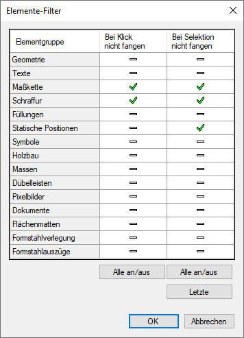
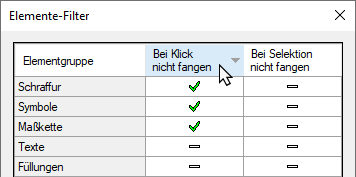

(untere Menüleiste)
Ein- oder Ausschalten der Auswahl- und Fangen-Funktionen für bestimmte Elementgruppen. Öffnet den Dialog Elemente-Filter.
Elemente-Filter
Benutzen Sie den Elemente-Filter, um bestimmte Elementgruppen bei der Bearbeitung auszuschließen.
 |
Bei Klick nicht fangen Dieses ist ein permanenter Filter, der immer aktiv ist. Das Symbol bedeutet, dass die entsprechenden Elemente bei allen Bearbeitungen ignoriert werden, wenn sie im Cursorbereich liegen. Beispiel: Im Bild links sind Schraffuren und Maßketten eingestellt. Wenn Sie sich mit diesen Einstellungen z. B. im Menü [Linien] befinden, werden während des Zeichnens von Linien weder Schraffurlinien noch die Elemente einer Maßkette gefangen. Das Menü selbst (hier Schraffur oder Maßkette) kann uneingeschränkt benutzt werden. Bei Selektion nicht fangen Dieser Filter ist nur in bestimmten Funktionen aktiv, zum Beispiel bei Verschieben oder Kopieren, wo ein Rahmen aufgezogen wird oder einzelne Elemente angeklickt werden. Das Symbol bedeutet, dass jedes einzelne Element der Elementgruppe nicht selektiert und somit z. B. nicht verschoben werden kann. Nach dem Verlassen des Menüs wird die Auswahl wieder zurückgesetzt. Siehe auch: Element sperren Alle an/aus Wählt alle Elementgruppen aus oder ab. Letzte Stellt die Auswahl wieder her. Wenn mindestens ein Filter in der Spalte (Bei Klick nicht fangen) eingeschaltet ist, wird das Filtersymbol auf der Schaltfläche in der unteren Menüleiste rot dargestellt. |
Elemente-Filter sortieren
Sie können den Elemente-Filter sortieren, indem Sie eine Spaltenüberschrift anklicken.
 |
Die Spalte Elementgruppe wird auf- oder absteigend in alphabetischer Reihenfolge sortiert. Die Spalten Bei Klick/Selektion nicht fangen werden nach aktivem oder nicht aktivem Status sortiert.
Siehe auch: